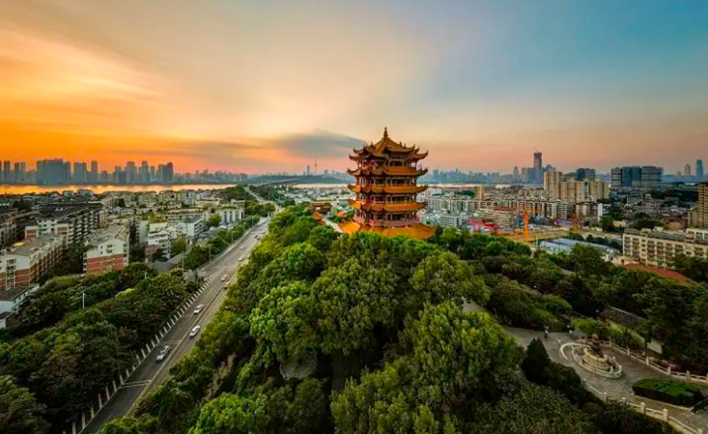

黄鹤楼，位于武昌江畔，蛇山之上，因“昔人已乘黄鹤去，此地空余黄鹤楼”而名扬天下，与南昌的滕王阁、岳阳的岳阳楼并称“江南三大名楼”，自古就有“天下绝景”之美誉。
据史料记载，三国时期，吴王孙权为实现“以武治国而昌”，筑城为守，建楼以嘹望，这就是最早的武昌与黄鹤楼。千百年来，黄鹤楼一直屹立于蛇山之上，已经成为武汉的名片与地标，与晴川阁、古琴台并称为“武汉三大名胜”。
黄鹤楼外观五层，内部实际九层，隐含九五至尊之意。主楼由七十二根圆柱支撑，攒尖顶、金色琉璃瓦，飞檐翘角、四望如一。楼外有铸铜黄鹤、胜像宝塔、牌坊、轩廊、亭阁等建筑环绕，将主楼衬托得熠熠生辉。
地址：武汉市武昌区蛇山西山坡特1号
东湖，是长江岸边的一汪湖泊，因位于武昌东部而得名，由郭郑湖、水果湖、汤菱湖、小汤菱湖、小潭湖、团窝、喻家湖、雁窝等湖组成，烟波浩渺，是武汉人心中的海。
自古以来，东湖就是著名的游览胜地，历史上屈原、李白等不少文人雅士曾经来到这里，留下了多少千古佳句。东湖是楚文化的中心，楚韵精彩、楚风浓郁，行吟阁声名远播，离骚碑闻名遐迩，共同组成一道靓丽的风景。东湖的景点很多，主要有寓言园、音乐喷泉、行吟阁、司马迁史料馆、水云乡、长天楼、九女墩、湖光山色阁等，大有＂秋水共长天一色＂之感。
行吟阁，建于1955年，位于东湖西北岸听涛轩东侧小岛上。这里四面环水，由新筑长堤上之荷风、落羽两桥通达。行吟阁雄伟壮观，造型庄重，颇具中国传统韵味。寓信园，坐落于东湖听涛区的南侧，是我国第一座以寓言故事为主题的雕塑园，面积不大，但非常有特色。湖光阁，本名"中实亭”，是为了为纪念蒋经国五寿诞而建，后改叫“湖光阁”。
地址：武汉市武昌区沿湖大道
说到木兰景区，其实是一个总称，这里有很多区域，且每个区域自成一景，常说的主要是木兰八景，即木兰山、木兰湖、木兰天池、木兰古门、清凉寨、木兰草原、农耕年华和云雾山这八大景点，因“代父从军”花木兰的故事而得名。
木兰山，属于大别山南麓高峰之一，也是道教胜地，这里是武汉人的后花园，是野生动植物的乐土。木兰山景点众多，主要有道教丛林、古寨区、蓝闪石石英脉、穿箭崖、棋盘石、龙尾石等。这里山山水水，花草树木，无不留有花木兰的影子。若是细心观察，便可发现山上的木兰花树、试箭石、龙尾石、下马石、木兰殿等一大批古迹都与花木兰有关，时至今日，这里仿佛还在告诉着世人木兰从军，血战疆场的传奇。
木兰湖，是荆楚大地上的一颗明珠，传说花木兰年幼时在此饮马而得名。湖面宽广，湖岸蜿蜒，湖中有二十几个岛屿，水质清澈，风景秀美。尤其是春秋两季，各种鸟类在此云集，翩翩起舞，这里成为鸟儿的栖息地。
木兰天池，也是非常适合全家出游的地方，主要有“浪漫山水”、“高峡人家”、“森林公园”三个主题，这里山明水秀，溪水长流，是山水结合的胜地。这里是一个大峡谷，被群山环绕的木兰天池如璀璨明珠，光彩夺目，湖水清澈，光洁如镜。在这里，可以观赏飞瀑、清潭、怪石等景观，有降龙石、八仙座、龙须潭、聪明泉、大天池、滑草、森林木屋等景点，是户外休闲的好去处。
地址： 武汉市黄陂区